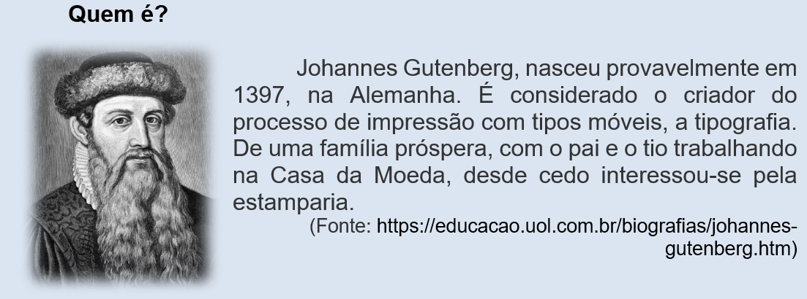
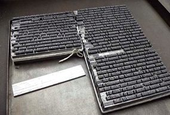
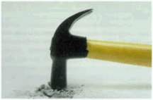
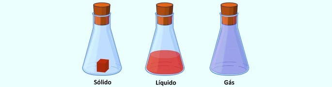
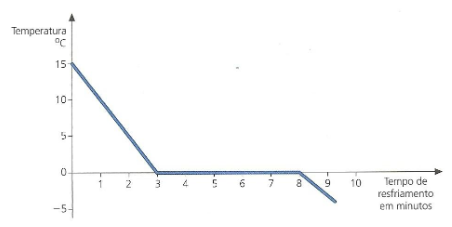

Capítulo 1: A indústria metalúrgica e literatura
Questão-problema:
O que a indústria metalúrgica tem a ver com a literatura? Você consegue imaginar como foram os primeiros livros impressos? Foi Gutenberg quem fabricou os primeiros tipos metálicos. Habilmente ele construiu peça por peça. As letras deixaram de ser escritas à mão, agora eram estampadas por cunho de caracteres feitos a partir da fundição do metal (uma liga de chumbo e estanho).
O processo de fundição em detalhe
A fabricação dos caracteres metálicos inventada por Johannes Gutenberg é uma cadeia de várias operações de mecânica de precisão, um processo moroso e difícil, que se desenvolvia em três fases distintas.
I Fase: Gravar punções
Na extremidade de um punção de aço, o corpo em relevo da letra era gravado. Usavam-se ferramentas de precisão e se obtinha o patriz. Para a impressão da Bíblia de 42 linhas foram necessários 296 punções, para obter todos os glifos (letras, números, ligaduras, abreviações) usados para compor a obra.
II Fase: Fazer as matrizes

A partir do cunho com os patrizes – uma forte pancada do punção sobre uma barra retangular de cobre – obtinham-se formas negativas, as chamadas matrizes. Depois de cunhadas pelo punção, as matrizes ficavam deformadas nos bordos, sendo necessário retificá-las.

Matrizes modernas de metal
III Fase: A fundição
As matrizes de cobre, inseridas num aparelho também inventado por Gutenberg, tornam-se moldes. Estes moldes permitem a fundição de milhares de caracteres de imprensa. A partir do molde, o fundidor de tipos obtinha um caractere em relevo, réplica exata da forma original que tinha gravado na ponta do punção.

Blocos de tipo (In: Heitlinger, Paulo. Tipografia: origens, formas e uso das letras. Copyright © 2006 Paulo Heitlinger, ISBN 10 972-576-396-3, ISBN 13 978-972-576-396-4, Depósito legal 248 958/06. Dinalivro. Lisboa, 2006.)
Reconstruindo conhecimentos:
Você costuma ler? O que você lê? Romances? Poesias? Assim como um leitor faz
escolhas, os gêneros literários também são escolhas. Os gêneros literários são escolhas – e, portanto, formas – de um escritor
de literatura colocar e discutir suas ideias para o leitor. Este, de posse do texto do seu autor escolhido, “dialoga” tanto com
a ideia quanto com o estilo literário também escolhido. Deste modo, você, aluno, ao ler um poema, um romance, um conto ou uma
peça de teatro, por exemplo, está se deparando com um modo de comunicação artística. O que isso, na verdade, quer dizer?
Uma das respostas possíveis é a de que a escolha artística e literária do escritor escolhido pelo leitor (no caso, você, aluno)
une esses dois sujeitos, não somente para uma discussão inteligente e consciente, como, também, para a busca de uma satisfação.
Claro que não apenas o prazer, pois o objetivo ao se ler um texto literário é, também, buscar nele a realidade de uma determinada época.
Este momento de uma realidade específica pode, entretanto, extrapolar seu contexto, dialogando com qualquer tempo na história da humanidade.
Um texto de William Shakespeare ou de Fiódor Dostoiévski ou, ainda, de Machado de Assis, “acontecem” não só nas épocas que eles escreveram,
pois “dizem” para o homem contemporâneo muita coisa também. Em nível dos gêneros literários (Shakespeare escreveu poemas e teatro,
Dostoiévski, romances e contos, Machado de Assis, romances, contos, poemas e crônicas), autores como os citados optaram, como se vê,
por gêneros abrangentes.


E nós, que não somos estes escritores e, talvez, ainda, não publicamos nada em nível da literatura? Será que em nosso dia a dia não usamos estes gêneros para nos expressar com nossa família, nossos amores e nossos amigos e conhecidos? A teoria dos gêneros literários surge da observação dos modos do homem se comunicar com os demais homens. Será que não usamos do lirismo (poético, do poema) para falarmos com a pessoa amada? O que dizer de certa dramaticidade (do elemento trágico, da tragédia de uma peça de teatro) para convencermos alguém de que nossa vida, em certo momento, passou por algum problema que pareceu sem solução? E o modo breve, descontraído e coloquial (do cotidiano) que narramos uma curta história e tantas vezes divertimos e aumentamos de modo caricatural uma cena, um momento? Não estaríamos neste instante lidando (normalmente sem associar) com uma crônica ou, então, com uma comédia, caso representarmos com gestos e falas desconcertantes e incisivas? E aquelas histórias longas, longuíssimas, que resolvemos contar e que parecem que não têm mais fim para os nossos amigos mais íntimos? Estas histórias longas não se aproximam do gênero romance? O importante é estarmos atento para os modos com que nos comunicamos com as outras pessoas, pois a fala, a escrita, os gestos, a escultura, a pintura, a dança, a representação artística no palco através de um texto de teatro, a música, a letra da música, etc. são decisivos para que façamos nossas ideias se concretizar, assim como para construir amizades, para discutir questões pessoais e técnicas com os colegas da indústria, da escola, da família, do amor, entre tantas possibilidades de conhecimento com pessoas que a vida nos dá a oportunidade e que não deveríamos desperdiçar tanto as pessoas que passam por determinados momentos de nossa história pessoal.
O que é um gênero (literário)?
Agora, vamos teorizar um pouco sobre estes gêneros literários. Conhecendo-os melhor, podemos pensar um pouco mais nas atitudes que tomamos quando estamos sozinhos ou em contato com alguém, por exemplo, no trabalho ou na família. É importante termos consciência dos modos de comunicação que nos aproximam dos gêneros literários, pois tendo este domínio, podemos repensar muitas vezes as maneiras que nos entendemos com as outras pessoas. Talvez as pessoas não tenham ainda se perguntado a origem da palavra gênero, embora, no dia a dia, as pessoas conceituam, ainda que abstratamente, o gênero. Dizemos que esta ou aquela pessoa fazem gênero (ou tipo, ou expressão) para convencer alguém ou, apenas, para chamar a atenção (outra forma de convencer!): meigo, tímido, agressivo, distante, etc.

No caso da literatura brasileira, aprende-se, regularmente no ensino da literatura, que cada período ou movimento literário utiliza-se preferencialmente de determinado gênero para se expressar dentro de certo contexto histórico-social. O Barroco (século XVII) e o Arcadismo (século XVIII) preferem o poema, sendo que o Arcadismo desenvolve o poema lírico e épico; o Romantismo (século XIX), devido à sua liberdade de criação e ao seu espírito de aventura, prefere expressar-se através de variados gêneros, no caso o poema, a prosa e o teatro; já o Realismo (século XIX) opta pela prosa – romance e conto; o Parnasianismo e o Simbolismo (ambos no século XIX), pelo poema; o chamado Pré-Modernismo (início do século XX) pela prosa e pela poesia (particularmente a de Augusto dos Anjos), o Modernismo (século XX) em suas fases, pelo poema, pela prosa e pelo teatro; os anos 40, pelo poema e pela prosa, assim como os anos 50 e a contemporaneidade.
Relembrando a história
Quinhentismo (Século XVI):
- Grandes navegações portuguesas;
- Descobrimento do Brasil (1500);
- Exploração do pau-brasil;
- Presença dos jesuítas.
Barroco (Século XVI Europa - XVII Brasil Colônia):
- Reforma Protestante (Lutero);
- Contrarreforma da Igreja Católica;
- Concílio de Trento;
- Companhia de Jesus;
- Exploração do açúcar na Bahia.
Arcadismo (Século XVIII Europa - Brasil Colônia):
- Iluminismo;
- Cientificismo;
- Enciclopedistas;
- Revolução Francesa (1789);
- Exploração do ouro em Minas Gerais;
- Inconfidência Mineira.
Elasticidade: A matéria volta ao volume e à forma iniciais quando cessa a compressão. No exemplo anterior, basta soltar o êmbolo da seringa que o ar volta ao volume e à forma iniciais.
Divisibilidade: A matéria pode ser dividida em partes cada vez menores. Quebre um pedaço de giz até reduzi-lo a pó. Quantas vezes você dividiu o giz?
Descontinuidade: Toda matéria é descontínua, por mais compacta que pareça. Existem espaços entre uma molécula e outra e esses espaços podem ser maiores ou menores tornando a matéria mais ou menos dura.
Matéria prima e indústria metalúrgica
Ao nosso redor existem inúmeros objetos feitos de ferro, aço ou alguma outra liga metálica que contenha ferro. Por isso, é pouco provável que alguém não saiba que metal é esse. Porém, o ferro não é encontrado na sua forma metálica isolada, livre na natureza, mas sim na forma de seus minérios. Os principais minérios de ferro são: Hematita (Fe 2 O 3 ); Magnetita (Fe 3 O 4 ); Siderita (FeCO 3 ); Limonita (Fe 2 O 3 .H 2 O); Pirita (FeS 2 ). Através dos minérios existentes na natureza é possível obter os mais diversos metais, tais como a prata, o mercúrio, o cobre, o chumbo e o zinco. A metalurgia é a área que estuda essas transformações. Um dos ramos da metalurgia é a siderurgia (do grego “trabalho feito sobre o ferro”), que estuda as formas de obtenção do ferro e do aço a partir de seus minérios, sendo que a mais utilizada é a hematita. Fonte: https://mundoeducacao.bol.uol.com.br/quimica/obtencao- ferro.htm
O ferro, como o alumínio e o cobre, apresenta características (propriedades) bem peculiares: é pouco maleável, tem densidade de 7,86g/cm3, e é pouquíssimo resistente à corrosão. Contudo, graças à interferência do homem, o ferro se tornou um metal bastante versátil - e, a partir dele, podemos confeccionar, por exemplo, panelas, portões, carcaças de máquinas e, principalmente, a liga de aço.
Fonte: https://educacao.uol.com.br/disciplinas/quimica/ferro-ocorrencia-obtencao-industrial-propriedades-e-utilizacao.htm1) O que é matéria? Explique.
2) Analise o gráfico abaixo sobre transformação de estado da matéria (H20) e responda as questões:
a) Qual a temperatura da água no início do experimento?
b) Durante quantos minutos só havia água líquida mesmo contendo cristais de gelo ?
c) A partir de quanto tempo a água ficou totalmente sólida?
3) Quais as principais matérias primas usadas na indústria metalúrgica?
4) Indique as características do metal Ferro (Fe) e diga quais suas aplicações na indústria metalúrgica: